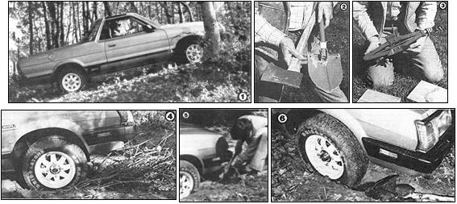

Staff Photos
[1] Most folks who live in the country find that they must occassionally take their vehicles off the beaten path. [2 and 3] Don't venture into the outback without the appropriate tools. A shovel, an axe, and a jack (plus a board or two to support it) are minimal equipment. [4] Sometimes dead branches (avoid cutting any from live trees unless you have absolutely no other choice) can provide enough traction to get you out of a potentially sticky situation. Once you get going, don't stop until you reach solid ground! [5] It will sometimes be necessary to dig a path for the wheels to follow . . . especially if they've buried themselves deep. [6] Rocks can be used to give you some traction and support in soggy ground.